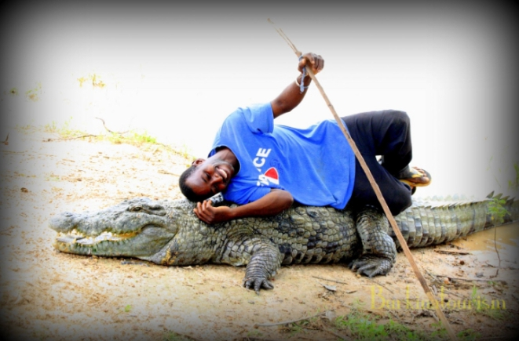

Quelques images des caimas
- 


La decription et l'historique des caimas de Sabou
Les caimas sacrés de Sabou sont liés à une tradition ancestrale où les crocodiles sont considerés comme des depositaire du sacré, notamment par les Kaboré qui en assurent la protection et la préservation.